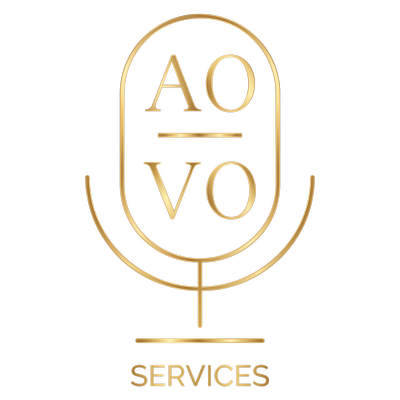

What Our Clients Say
Real feedback from real projects — every review below is from a client we’ve worked with. Names are withheld for privacy.
An excellent job, including professional voice control, high-quality recording and processing, as well as friendly communication. I will be glad to return to cooperation with Ahmed, if given the opportunity. He is attentive to details and precise in his work. Everything is perfect!
It was an absolute pleasure working with Ahmed for our project. He was friendly, professional and very quick to respond. Ahmed is a truly talented voice actor! He addressed our comments thoroughly within the second variation and showed a genuine interest in our project. We will definitely be working with him again.
As a startup jewellery brand owner, working through [platform] for the first time, Ahmed provided exceptional service, support, and mannerism with quick response times, and went above and beyond with his service. Ahmed provided a great initial voice over for the script I required, and was happy to create another two alternative voice notes upon request. 10/10! Highly recommend and will be working with Ahmed in the near future.
Working with Ahmed was an absolute pleasure! He delivered everything incredibly fast, highly professional, and with outstanding precision. Communication was warm, clear, and effortless, and he followed every single instruction—no matter how small—with perfect accuracy. You can immediately feel that Ahmed works with real passion and a strong commitment to quality. I couldn’t be happier with the result and can highly recommend him to anyone looking for top-tier voice work. Thank you for the fantastic collaboration — would absolutely work with him again!
Fantastic work! Hearing back the reading was immensely satisfying and has enabled my creative project. His voice, audio quality and understanding of the language is a rare find on this platform. I feel fortunate to have found Ahmed!
Great work! Delivered the lines with excellent quality, strong performance, and on time. The voice acting captured exactly the tone I was looking for, bringing life to the character. Clear audio, natural delivery, and very easy to communicate with. Highly recommend and would definitely work together again in the future!
Ahmed is one of the best here on [platform]! If you need a dramatic narrative brought to life, he is your guy. His voice and his storytelling abilities are vivid and beautiful. He is professional and delivers on time. We will definitely be working with him again!
Ahmed truly SHINES in the voice-over domain! His professionalism and exceptional sound quality exceeded expectations, making him stand out among Arabic voice talents. With remarkable language fluency and quick responsiveness, working with Ahmed was a breeze. Highly recommended and I’m looking forward to future collaborations. 🙌
I had the pleasure of working with Mr. Ahmed on this project, and I cannot express how impressed I am with their talent and professionalism. My experience with Ahmed was exceptional from start to finish. He not only delivered top-notch translations and voice-overs but also made the entire process smooth and stress-free.